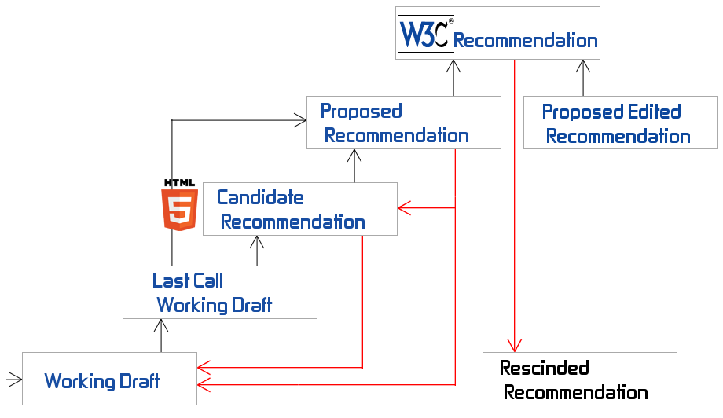

Ikke

Weekoverzicht Internetstandaarden
| HC | WG | |
|---|---|---|
| Blokweek 1 | CMD AAN! | CMD AAN! |
| Blokweek 2 | DE ZOEKTOCHT NAAR BETEKENIS - Semantiek HOE MAAK JE HTML OP - Praktisch DAT IS DOM! - HTML basis UPLOAD – Publiceren van jouw website |
Drieluik oefening analyse
Tools Eerste website maken en online zetten |
| Blokweek 3 | ALGEMEEN BESCHAAFD HTML - Syntax vs. semantiek FUT (Frequently Used Tags) - Content structuur aangeven A BOX IN A BOX IN A BOX ... - Block vs. inline vs. invisible DON'T BELIEVE THE HYPE - nieuwe html5 elementen |
Huiswerk bespreken Criteria HTML Onderzoek menustijlen |
| Blokweek 4 | DIVIDE ET IMPERA – Scheiding vormgeving, inhoud en gedrag HOE PAS JE CSS TOE - Praktisch SELECTA – Hoe selecteer je elementen MOOIE DINGEN MAKEN - Over kleur en typografie |
FEEDBACKSESSIE HTML Demo one-column en two-column layout Wireframes schetsen |
| Blokweek 5 | LoVe HAte YOUR LINKS - Pseudo classes DE LEEGTE IS JE VRIEND - Box model LEG HET NEER - layout |
Vlakverdeling oefening Grove vlakverdeling met CSS |
| Blokweek 6 | IMAGINE THAT! – invoegen van afbeeldingen CSS3 FROM HELL – the perks and the prefix hell of CSS3 GOED GEDRAG WORDT BELOOND - Javascript intro |
FEEDBACKSESSIE CSS jQuery |
| Blokweek 7 | OVER HET SNEL DOCH SLORDIG INZETTEN VAN JAVASCRIPT - JQuery MANIPULEER JE DOM - Luisteren naar en inspelen op gebeurtenissen |
Werken aan eindopdracht |
| Blokweek 8 | Herfstreces | Herfstreces |
| Blokweek 9 | SYMPOSIUM: STUDENTEN PRESENTEREN VOORBEREIDING OP TENTAMEN VEELGESTELDE VRAGEN OVER WEBSITE |
Verplichte werkgroep! Elkaars website beoordelen. |
| Blokweek 10 | Toetsweek | Toetsweek - geen lessen |
Ninja learning 101
- Maak aantekeningen
- Verzin zelf studievragen
- Werk aantekeningen direct uit
- Print je aantekeningen in puntje 8
- Sorteer ze per vak
- Gebruik je downtime om te leren

<FUT> Frequently Used Tags

Syntax vs. semantiek
Algemeen Beschaafd HTML

Dialect is verboden
Pauzeopdracht
Bedenk wat de definitie is van een semantische fout
Syntax
Colourless green ideas sleep furiously
A box in a box in a box ...

Nesten
- html
- head
- title
- meta
- body
- ul
- head

LET OP!
Studievragen
- Wat doet een validator?
- Wat is het verschil tussen syntactische fouten en semantische fouten in je HTML-code?
- Hoe kan je een menu maken in HTML-code?
- Wat zijn veelgebruikte HTML-tags?
- Wat zijn nieuwe HTML5 elementen?
- Wat is het verschil tussen block-level, inline en invisible elementen?
Wat komt
- Wo 19:00 uur diagnostische toets voor gevorderden
- Werkgroep
- Practicum di ochtend in medialounge of
- Online practicum (zie uitleg op intranet)
Huiswerk
Lezen hoofdstuk 4, 5, 6 en 8
uit HTML & CSS